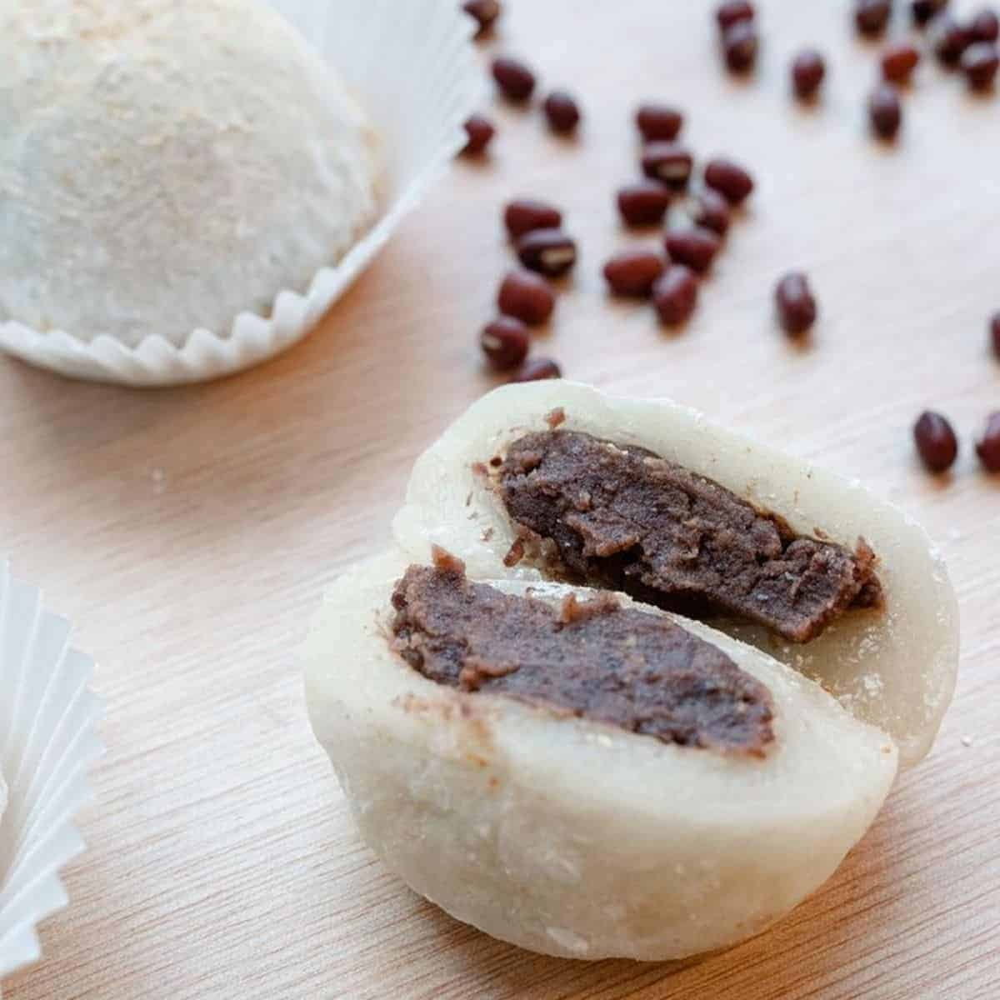

Centrale
Est
Ouest
Sud
Atayef
Ingrédients
- 250g de farine
- 1 cuillère à soupe de levure chimique
- 1 cuillère à soupe de sucre
- 200ml d'eau tiède
- 100g de noix hachées (facultatif)
- 100g de fromage blanc ou de crème
- 100g de sucre glace
Instructions
- Mélanger la farine, la levure, le sucre et l'eau pour obtenir une pâte fluide.
- Verser des petites quantités de pâte dans une poêle chaude pour former de petits pancakes.
- Lorsque des bulles se forment à la surface, retourner les pancakes pour cuire l'autre côté.
- Farcir les pancakes avec du fromage blanc ou des noix hachées, puis plier en demi-lune.
- Saupoudrer de sucre glace avant de servir.

Baklava
Ingrédients
- 250g de pâte filo
- 200g de noix (amandes, pistaches ou noisettes)
- 150g de sucre
- 200g de beurre fondu
- 150ml de miel
- 100ml d'eau
- 1 cuillère à soupe de jus de citron
Instructions
- Préchauffer le four à 180°C.
- Hacher les noix et les mélanger avec le sucre.
- Beurrer un moule et y déposer une feuille de pâte filo, puis beurrer. Répéter cette opération avec 5 feuilles.
- Ajouter une couche de noix hachées, puis recouvrir de 3 feuilles de pâte.
- Couper la pâte en losanges et cuire au four pendant 30-35 minutes.
- Faire chauffer le miel, l'eau et le jus de citron, puis verser le sirop chaud sur le baklava à la sortie du four.
Barfi
Ingrédients
- 200g de lait en poudre
- 150g de sucre
- 50g de ghee (beurre clarifié)
- 1/2 tasse de lait
- 1/4 de cuillère à café de cardamome
Instructions
- Dans une poêle, faire chauffer le ghee et ajouter le lait en poudre.
- Ajouter le lait et mélanger jusqu'à ce que la préparation épaississe.
- Ajouter le sucre et la cardamome et mélanger jusqu'à ce que la pâte se détache des bords de la poêle.
- Verser dans un moule, laisser refroidir et couper en carrés.

Basbousa
Ingrédients
- 200g de semoule
- 100g de sucre
- 125g de yaourt nature
- 100g de beurre fondu
- 1 cuillère à soupe de levure chimique
- 100ml de lait
- 100ml de sirop de sucre
Instructions
- Préchauffer le four à 180°C.
- Mélanger la semoule, le sucre, la levure et le yaourt dans un grand bol.
- Ajouter le lait et le beurre fondu, puis bien mélanger.
- Verser la pâte dans un moule beurré et cuire pendant 30 minutes.
- Une fois cuit, verser le sirop de sucre sur le gâteau encore chaud.

Burek
Ingrédients
- 500g de pâte filo (ou pâte brisée)
- 300g de viande hachée (agneau ou bœuf)
- 1 oignon
- 2 cuillères à soupe d’huile d'olive
- 1 cuillère à soupe de cumin
- 1 cuillère à soupe de paprika
- Sel et poivre
- 1 œuf (pour dorer)
Instructions
- Faire revenir l’oignon haché dans l’huile d’olive jusqu'à ce qu'il soit doré.
- Ajouter la viande hachée, le cumin, le paprika, le sel et le poivre. Cuire jusqu'à ce que la viande soit bien cuite et assaisonnée.
- Préchauffer le four à 180°C.
- Étaler la pâte filo sur une surface plane, badigeonner chaque feuille avec un peu d'huile d'olive.
- Disposer une couche de farce sur la pâte et enrouler pour former un rouleau ou un croissant, selon votre préférence.
- Placer le burek sur une plaque de cuisson et badigeonner avec l'œuf battu.
- Cuire au four pendant 25-30 minutes, jusqu’à ce qu’il soit bien doré.

Chak Chak
Ingrédients
- 200g de farine
- 2 œufs
- 30g de beurre fondu
- 1 cuillère à soupe de sucre
- 1/2 cuillère à café de levure chimique
- 100g de miel
- 50g de noix hachées
- Huile pour friture
Instructions
- Mélanger la farine, les œufs, le beurre fondu, le sucre et la levure chimique pour former une pâte.
- Façonner la pâte en petits morceaux ou bandes.
- Faire chauffer l'huile et y faire frire les morceaux de pâte jusqu'à ce qu'ils soient dorés.
- Faire chauffer le miel dans une petite casserole.
- Mélanger les morceaux de pâte frite avec le miel chaud.
- Décorer avec des noix hachées et laisser refroidir avant de servir.

Chalpak
Ingrédients
- 250g de farine
- 50g de sucre
- 1 œuf
- 50g de beurre fondu
- 100ml de lait
- 1 sachet de levure chimique
- 1 pincée de sel
Instructions
- Mélanger la farine, la levure chimique, le sucre et le sel dans un bol.
- Ajouter l'œuf, le lait et le beurre fondu, puis pétrir pour obtenir une pâte lisse.
- Laisser reposer la pâte pendant 30 minutes.
- Diviser la pâte en petites boules, puis les aplatir pour former des galettes.
- Cuire les galettes dans une poêle chaude, 2-3 minutes de chaque côté, jusqu'à ce qu'elles soient dorées.
- Servir tiède avec du miel ou du sucre glace.
Chhena Poda
Ingrédients
- 500g de fromage cottage (chhena)
- 200g de sucre
- 1/4 de cuillère à café de cardamome en poudre
- 50g de noix de cajou
Instructions
- Mélanger le fromage cottage, le sucre, la cardamome et les noix de cajou dans un bol.
- Verser la préparation dans un moule et cuire à 180°C pendant 30-40 minutes, jusqu'à ce qu'il soit bien doré.
- Laisser refroidir avant de démouler et servir.
Coconut Rice Pudding
Ingrédients
- 150g de riz gluant
- 200ml de lait de coco
- 50g de sucre
- 1/2 cuillère à café de sel
Instructions
- Rincer le riz gluant et cuire à la vapeur pendant 20 minutes.
- Dans une casserole, chauffer le lait de coco, le sucre et le sel à feu doux jusqu'à ce que le sucre soit dissous.
- Ajouter le riz cuit dans le lait de coco et laisser reposer 10 minutes pour que le riz absorbe le lait.
- Servir tiède ou froid.

Doodh Peda
Ingrédients
- 500ml de lait entier
- 3 cuillères à soupe de lait en poudre
- 100g de sucre
- 2 cuillères à soupe de ghee (beurre clarifié)
- 1/4 cuillère à café de cardamome en poudre
- Amandes ou pistaches pour la garniture
Instructions
- Faire chauffer le ghee dans une poêle et ajouter le lait. Porter à ébullition.
- Réduire le feu et laisser mijoter jusqu'à ce que le lait réduise de moitié.
- Ajouter le lait en poudre et le sucre, puis remuer constamment jusqu'à ce que le mélange épaississe et commence à se détacher des parois de la poêle.
- Ajouter la cardamome et bien mélanger.
- Verser le mélange dans un plat, laisser refroidir, puis couper en petits carrés ou former des boules.
- Garnir de noix hachées et servir.
Dorayaki
Ingrédients
- 2 œufs
- 100g de sucre
- 2 cuillères à soupe de miel
- 1 cuillère à soupe de sauce soja
- 100g de farine
- 1/2 cuillère à café de levure chimique
- 200g de pâte d'azuki (haricots rouges)
Instructions
- Fouetter les œufs, le sucre, le miel et la sauce soja.
- Ajouter la farine et la levure tamisées et bien mélanger.
- Chauffer une poêle légèrement huilée à feu moyen et y verser de petites cuillerées de pâte pour former des cercles.
- Cuire chaque côté jusqu'à ce qu'il soit doré.
- Laisser refroidir légèrement, puis garnir de pâte d'azuki et assembler les pancakes.

Gulab Jamun
Ingrédients
- 200g de lait en poudre
- 2 cuillères à soupe de farine
- 2 cuillères à soupe de beurre fondu
- 1/4 de cuillère à café de cardamome en poudre
- 1/2 tasse de lait
- 1 cuillère à soupe de levure chimique
- 200g de sucre
- 200ml d'eau
- 1 cuillère à soupe de rose ou d'eau de fleur d'oranger
- Huile pour la friture
Instructions
- Dans un bol, mélanger le lait en poudre, la farine, la levure et la cardamome.
- Ajouter le beurre fondu et mélanger jusqu'à obtenir une pâte.
- Ajouter lentement le lait et pétrir pour former une pâte lisse et souple.
- Diviser la pâte en petites boules sans fissures.
- Chauffer l'huile dans une poêle et faire frire les boules à feu doux jusqu'à ce qu'elles soient dorées.
- Dans une autre casserole, préparer un sirop en faisant chauffer l'eau et le sucre. Ajouter l'eau de rose ou de fleur d'oranger.
- Plonger les boules frites dans le sirop chaud et laisser reposer pendant 30 minutes avant de servir.

Halawat el Jibn
Ingrédients
- 250g de fromage mozzarella ou de fromage blanc
- 150g de semoule fine
- 100g de sucre
- 100ml de lait
- 2 cuillères à soupe de beurre fondu
- 1 cuillère à soupe d'eau de rose ou de fleur d'oranger
- Sirop de sucre (facultatif)
Instructions
- Mélanger la semoule, le lait, le sucre et le beurre dans une casserole.
- Chauffer à feu doux en remuant constamment jusqu'à ce que la pâte épaississe.
- Ajouter le fromage et l'eau de rose, puis mélanger jusqu'à obtenir une pâte lisse.
- Façonner des petites boules ou des cylindres avec la pâte, puis les rouler dans un peu de semoule.
- Verser un peu de sirop de sucre sur le dessus et servir chaud ou froid.

Halva (au tahini)
Ingrédients
- 250g de tahini (pâte de sésame)
- 200g de sucre
- 50g de beurre
- 100ml d'eau
- 1 cuillère à café de vanille (facultatif)
Instructions
- Faire chauffer le beurre dans une casserole à feu moyen.
- Ajouter le sucre et l'eau, puis remuer jusqu'à ce que le sucre soit dissous.
- Ajouter le tahini et la vanille (si utilisée), et continuer à cuire pendant 10-15 minutes, jusqu'à épaississement.
Kunafa
Ingrédients
- 200g de pâte filo râpée (ou kataifi)
- 150g de fromage blanc ou mozzarella
- 100g de beurre fondu
- 100ml de sirop de sucre
- 1 cuillère à soupe d'eau de rose (facultatif)
Instructions
- Mélanger la pâte filo râpée avec le beurre fondu.
- Beurrer un moule et y déposer une couche de pâte filo.
- Ajouter une couche de fromage sur la pâte, puis recouvrir d'une autre couche de pâte filo.
- Cuire au four à 180°C pendant 30-35 minutes, jusqu'à ce que la pâte soit dorée et croustillante.
- Verser le sirop de sucre (avec de l'eau de rose si vous le souhaitez) sur la kunafa chaude, laisser absorber et servir.

Kurut
Ingrédients
- 500ml de lait
- 1 cuillère à soupe de yaourt nature
- 1/2 cuillère à café de sel
- 50g de beurre fondu (facultatif)
Instructions
- Faire chauffer le lait à 40°C.
- Ajouter le yaourt nature et le sel, bien mélanger.
- Laisser le lait fermenter pendant 24 heures à température ambiante.
- Égoutter le yaourt et le laisser sécher dans un endroit frais.
- Une fois sec, façonner le yaourt en petites boules ou en galettes.
- Servir en accompagnement ou comme en-cas avec du beurre fondu.
Laddu
Ingrédients
- 200g de farine de pois chiche
- 100g de beurre clarifié (ghee)
- 150g de sucre en poudre
- 1/4 de cuillère à café de cardamome en poudre
- 50g de noix hachées (optionnel)
Instructions
- Faire chauffer le ghee dans une poêle et ajouter la farine de pois chiche.
- Faire cuire à feu doux jusqu'à ce que la farine devienne dorée.
- Ajouter le sucre et la cardamome et bien mélanger.
- Laisser refroidir légèrement, puis former des boules avec la pâte.
- Garnir de noix hachées, si désiré, et laisser refroidir avant de servir.

Mochi
Ingrédients
- 200g de farine de riz gluant
- 150ml d'eau
- 50g de sucre
- Fécule de maïs (pour saupoudrer)
Instructions
- Mélanger la farine de riz gluant, l’eau et le sucre dans un bol.
- Cuire à feu doux dans une casserole en remuant constamment pendant 10-15 minutes.
- Lorsque la pâte devient épaisse et élastique, la verser sur un plan de travail saupoudré de fécule de maïs.
- Laisser refroidir légèrement et diviser en petites boules.
- Saupoudrer de fécule et servir.

Mooncake
Ingrédients
- 200g de farine de blé
- 100g de sirop de sucre inverti
- 50g d'huile végétale
- 1 cuillère à soupe de lait en poudre
- 1/4 de cuillère à café de sel
- 400g de pâte de lotus sucrée
- 2 jaunes d'œufs salés (optionnel)
Instructions
- Mélanger la farine, le sirop de sucre inverti, l'huile, le lait en poudre et le sel. Mélanger jusqu'à obtenir une pâte lisse.
- Enrouler la pâte dans un film plastique et laisser reposer 30 minutes.
- Diviser la pâte de lotus en boules de 30-40g. Si vous utilisez des jaunes d'œufs salés, les insérer au centre de chaque boule de pâte de lotus.
- Diviser la pâte en petites boules de 25-30g. Aplatir chaque boule de pâte en un disque. Placer une boule de pâte de lotus au centre et refermer la pâte autour.
- Façonner les boules et les insérer dans des moules à mooncake. Appuyer fermement pour imprimer le motif du moule.
- Préchauffer le four à 180°C. Disposer les mooncakes sur une plaque de cuisson recouverte de papier sulfurisé. Cuire pendant 10-15 minutes.
- Après la première cuisson, badigeonner les mooncakes avec un jaune d'œuf battu pour les dorer.
- Recuire pendant 5-10 minutes supplémentaires.
- Laisser refroidir avant de servir.
Mysore Pak
Ingrédients
- 200g de farine de pois chiche
- 200g de ghee (beurre clarifié)
- 200g de sucre
- 1/2 tasse d'eau
Instructions
- Faire chauffer le ghee dans une poêle à feu doux.
- Ajouter la farine de pois chiche et cuire en remuant constamment.
- Dans une autre casserole, faire un sirop léger avec l'eau et le sucre.
- Ajouter le sirop au mélange de farine et ghee, puis cuire jusqu'à obtenir une pâte épaisse.
- Verser dans un moule et laisser refroidir avant de couper en morceaux.

Panna Cota
Ingrédients
- 250ml de crème liquide
- 50g de sucre
- 2g de gélatine en poudre
- 2 cuillères à café de poudre de matcha
Instructions
- Dissoudre le matcha dans une petite quantité de lait chaud.
- Chauffer la crème et le sucre dans une casserole à feu doux.
- Ajouter la gélatine et le mélange matcha dans la crème chaude, et bien mélanger.
- Verser dans des petits pots et laisser reposer au réfrigérateur pendant 4 heures.
- Déguster froid avec des fruits ou des biscuits.

Shahi Tukda
Ingrédients
- 4 tranches de pain (de préférence du pain rassis)
- 200ml de lait
- 100g de sucre
- 2 cuillères à soupe de ghee (beurre clarifié)
- 1/2 cuillère à café de cardamome en poudre
- 10-12 amandes et pistaches hachées
Instructions
- Faire frire les tranches de pain dans le ghee jusqu'à ce qu'elles soient dorées et croustillantes.
- Dans une casserole, faire chauffer le lait et ajouter le sucre. Laisser cuire jusqu'à ce que le lait épaississe légèrement.
- Ajouter la cardamome en poudre et bien mélanger.
- Placer les tranches de pain frites dans un plat de service et verser le lait sucré chaud par-dessus.
- Garnir d'amandes et de pistaches hachées.
- Servir tiède ou froid.

Shekerbura
Ingrédients
- 250g de farine
- 50g de beurre fondu
- 1 œuf
- 60ml d'eau tiède
- 100g de sucre en poudre
- 1 cuillère à soupe de levure chimique
- 200g de noix (amandes, noisettes ou noix de Grenoble)
- 50g de sucre (pour la garniture)
Instructions
- Mélanger la farine, la levure, l'œuf, le beurre et l'eau pour obtenir une pâte homogène.
- Laisser reposer la pâte pendant 30 minutes.
- Mélanger les noix avec le sucre pour préparer la garniture.
- Étaler la pâte, découper des cercles et ajouter la garniture au centre.
- Pliée en demi-lune et sceller les bords.
- Cuire à 180°C pendant 20 minutes.

Somsa
Ingrédients
- 500g de pâte à pain
- 300g de viande hachée (généralement de l’agneau ou du bœuf)
- 1 oignon
- 1 pomme de terre (facultatif)
- 1 cuillère à café de cumin
- 1 cuillère à café de coriandre en poudre
- Sel et poivre
- 1 œuf (pour dorer)
Instructions
- Dans une poêle, faire revenir l’oignon haché dans un peu d’huile.
- Ajouter la viande hachée et cuire jusqu’à ce qu’elle soit bien dorée.
- Râper la pomme de terre et l’ajouter à la viande avec les épices, le sel et le poivre. Laisser refroidir.
- Préchauffer le four à 200°C.
- Diviser la pâte en petites boules, puis les étaler pour former des cercles.
- Déposer une cuillère de farce au centre de chaque cercle et refermer en formant un chausson.
- Badigeonner les somsa avec l’œuf battu.
- Cuire au four pendant 20-25 minutes jusqu’à ce qu’elles soient bien dorées et croustillantes.

Taro Cake
Ingrédients
- 400g de taro (racine)
- 100g de farine de riz gluant
- 50g de sucre
- 1/2 cuillère à café de vanille
- 200ml d'eau
Instructions
- Faire cuire le taro dans de l'eau bouillante jusqu'à ce qu'il soit tendre, puis le réduire en purée.
- Mélanger la purée de taro, la farine de riz gluant, le sucre et la vanille avec l'eau.
- Verser le mélange dans un moule et cuire à la vapeur pendant 30-40 minutes.
- Laisser refroidir et couper en morceaux pour servir.

Trouver plus de recette